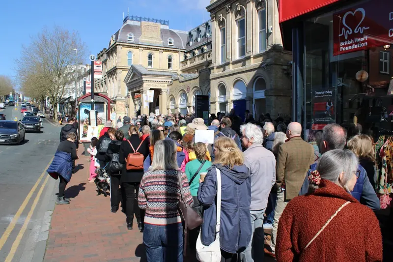
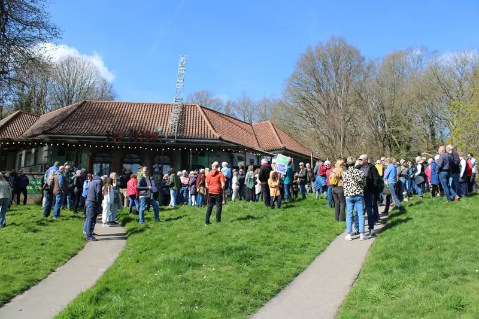
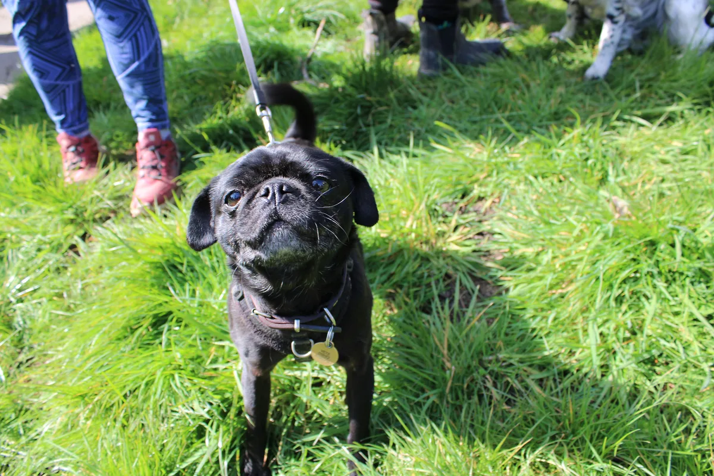

Securing the Freehold for Everyone, Forever
Our landmark community campaign to bring Tunbridge Wells and Rusthall Commons into permanent charitable ownership.
Why community ownership matters
The Commons are protected by a range of legal and statutory safeguards, but ownership still matters. A private freeholder may have different priorities from those of the local community, particularly around access, land use, maintenance and the commercial use of the estate. Community ownership would give the Friends a long-term opportunity to keep the freehold in charitable ownership.
Decisions would be guided by the protection and enjoyment of the Commons rather than commercial interests. As a charity, the Friends would be accountable to its members, trustees and the Charity Commission, with the protection, enhancement and public enjoyment of the Commons at the heart of its work.
March for the Commons: 21 March 2026
Hundreds of residents, families, and dog walkers gathered across Tunbridge Wells and Rusthall to demonstrate overwhelming community support behind the freehold purchase bid.



National & Regional Media Coverage
National and regional media have reported on and covered the campaign to secure the Commons for the community. Tunbridge Wells Borough Council (TWBC) supports the local bid.
Register Your Confidential Financial Pledge
A pledge is a commitment of support should our charitable community purchase proceed. No money is taken now.
Why Every Pledge Counts
Every pledge—large or small—shows that our local community stands together to protect the Commons for future generations.
- Completely confidential • No upfront payment
- Every contribution helps, from £20 to £10,000+
- Direct email option with Trustee John Barber
Frequently Asked Questions
Answers to key questions regarding the commercial sale of the Commons, our charity bid, and long-term community ownership.
What happens now?
What happens now?
The marketing of the Commons as part of a wider estate
The Commons are now being marketed as part of a wider estate that also includes The Pantiles.
As this is a significantly different commercial proposition, the Friends will not be seeking to purchase the estate as currently offered, and there are no immediate plans to call on community pledges.
Our long-term ambition remains unchanged: to secure the Commons for the benefit of the community. We will continue to engage constructively with any future owner to explore opportunities for community ownership should they arise.
We will keep supporters informed of any significant developments.
Are the Friends still interested in community ownership?
Our continuing dedication to securing the land
Yes.
The Friends continue to believe that ownership by a local charity dedicated solely to the Commons would provide the strongest possible long-term protection for these special places.
Should circumstances change, we remain ready to explore opportunities for community ownership.
Why haven’t there been many updates recently?
Commercial timescales and verified updates
Property transactions can involve long periods where there is little public information available.
At the present time there is no significant news to report. Rather than speculate, we will continue to share updates when there are meaningful developments.
Do pledges still matter?
How over 3,000 pledges demonstrate local mandate
Yes.
More than 3,000 residents have already pledged their support for community ownership. These pledges demonstrate the depth of community commitment to protecting the Commons for future generations.
Although the Friends are not seeking to purchase the estate in its current form, pledges remain an important expression of support should a future opportunity for community ownership arise.
Can I still make a pledge?
Submitting new pledges towards future acquisition
Yes.
New pledges are still welcome and help demonstrate continuing community support for ownership of the Commons by a local charity.
No payments will be requested unless an opportunity for community ownership arises.
How is my pledge data protected under UK GDPR?
Pledge Data Privacy Notice, data controller details, and your
rights
The Friends of Tunbridge Wells and Rusthall Commons is committed to protecting your personal information and ensuring complete transparency:
- 1. Data Controller & Purpose: Your details (name, email, postcode, optional telephone, and pledge amount) are recorded solely by the charity's Trustees to calculate collective community support, establish our financial capacity for purchase negotiations, and verify local backing for grant-matching bodies.
- 2. Strict Confidentiality Guarantee: Individual pledge sums, personal identities, and aggregate financial totals are held in strict confidence by the Trustees. To protect the charity's negotiating position, campaign pledge sums and financial targets are not disclosed to estate agents, vendors, or commercial third parties. Only broad, non-financial backing metrics (such as the breadth of local household participation across TN1, TN2 and TN4) may be referenced to demonstrate community mandate.
- 3. No Financial Commitment Now: Registering a pledge does not collect bank details or take money. You will only be contacted to transfer funds if and when a formal freehold acquisition contract is agreed and accepted by the Trustees.
- 4. Your Rights & Data Erasure: Under UK GDPR, you have the right to amend your pledge, request a copy of your entry, or ask for your personal details to be permanently erased at any time. To do so, email the Trustees at secretary@friendsofthecommons.uk or via our Contact Page. All pledge records will be securely deleted once the freehold campaign concludes.
Why does community ownership matter?
Why are the Commons for sale?
Private freehold status and future stewardship
The Commons are privately owned and the current owner has decided to sell. This does not change the strong legal protections already in place, but it does raise important questions about future ownership and stewardship.
Are the Commons at risk of being developed?
Statutory protections, Village Green status, and long-term
certainty
The Commons are among the most legally protected green spaces in Tunbridge Wells. They are registered village greens, lie within conservation areas, and are governed by specific legislation. Large-scale development is extremely restricted and, in many cases, unlawful.
However, ownership still matters, and community ownership offers the greatest long-term certainty.
Why do the Friends want to buy the Commons?
Dedicated charitable ownership vs. commercial investors
The Friends believe that ownership by a local charity dedicated solely to the Commons is the best way to secure their future. Community ownership would remove commercial pressure, keep decisions local, and ensure the Commons are managed only for public enjoyment, conservation and heritage.
What would change if the Friends owned the Commons?
Everyday access and the role of the Conservators
Day-to-day enjoyment of the Commons would not change. Access would remain open, and the Conservators would continue their vital management role.
What would change is long-term certainty: ownership would sit with a body whose sole purpose is to protect the Commons for the community.
Why is fundraising needed if the Commons are already protected?
Preventing commercial speculation and fragmentation
Legal protections are strong, but they do not prevent speculative interest or repeated attempts to extract commercial value. Ownership by the Friends would provide the strongest possible safeguard by aligning legal ownership with the Commons’ purpose.
Community ownership also prevents fragmentation of the Commons through piecemeal sale, ensuring the land is protected as a single, coherent public asset.
How would donated or pledged funds be used?
Direct acquisition and associated professional costs
Any funds raised would be used solely to support the purchase of the Commons and related professional costs. The Friends are committed to transparency and will keep supporters informed as plans develop.
What happens if the Friends are unable to buy the Commons?
Conditionality guarantee and signaling community mandate
Even if a purchase is not achieved, funds pledged will demonstrate the depth of community support. This will send a strong signal to future owners about the keen interest the community have in the Commons being used for the benefit of the community.
No pledged funds will be collected if a purchase does not proceed.
How will this impact the Conservators?
Ownership vs. day-to-day land management
The Friends work closely with the Commons Conservators and support their stewardship of the land. This initiative is about ownership, not management, and about ensuring that long-term decisions reflect local priorities.
Does local government change affect this?
Maintaining a strong local voice for Tunbridge Wells
Potential changes to local government structures could mean decisions about the Commons are taken further from Tunbridge Wells. Community ownership helps ensure a strong local voice continues to speak for the Commons’ importance.
Why should I pledge or donate now?
Demonstrating serious community backing to vendors and grant
makers
Early pledges help demonstrate serious community intent and strengthen discussions with the seller and with potential funders. Even expressions of interest at this stage are valuable.
How much would the Commons cost?
Valuation and negotiation principles
No purchase price has been agreed. The Friends have submitted a formal bid, are engaged in the sale process, and are not speculating on figures.
What is the appropriate ownership structure?
Charitable holding body and Community Interest Company
The Friends are currently exploring the most appropriate structure to own The Commons, whilst continuing to operate as a gift-aid receiving charity. This will likely require the creation of a Community Interest Company although other options are available.
The sales brochure mentions a land swap to enable development of the
Upper
Pantiles car park. Is this possible?
Village Green law and the Still Green proposal
The sales brochure refers to a potential land exchange involving the Upper Pantiles car park and land at Still Green. Any such proposal would face very significant legal and procedural constraints. There would be questions about whether Still Green is an appropriate swap considering the strict criteria that needs to be met.
In addition, the Commons are registered village greens governed by specific legislation. Any land swap would need to meet a high legal bar, including multiple consents, clear public benefit, and protection of public rights. Such exchanges are rare, complex and far from assured, and should not be treated as straightforward or likely.
Can the Commons provide Biodiversity Net Gain (BNG), as suggested in the
sales brochure?
Commercial offsetting constraints and existing high
biodiversity
In theory, BNG is part of the planning system, but the ability for the Commons to provide BNG units is highly constrained. The amount of improvement that the Commons would need to show in diversity improvement may be extremely challenging given that they have been subject to rolling Management Plans for many years and these have already delivered significant biodiversity gain.
The Commons are protected land managed for public enjoyment, conservation and heritage, not for commercial offsetting. Any BNG proposal would need to comply with legislation, management plans and byelaws, demonstrate genuine additional benefit, and receive approval from the Commons Conservators. In practice, such proposals are complex, uncertain and not an established use of the Commons.
Commercial Estate Brochure & Campaign Guidance
For background information, you can download the commercial marketing brochure prepared by BNP Paribas Real Estate for the vendor, as well as notes from our public meetings in early 2026:
Note: The sales brochure is a commercial vendor marketing document, not an official publication of The Friends.